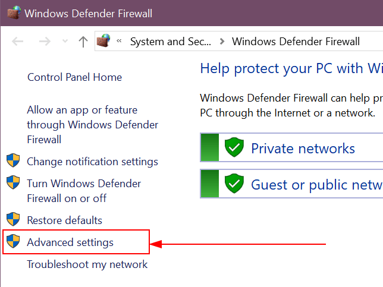

Conectar Windows IoT a Odoo¶
Una caja IoT virtual es un programa informático que se debe descargar e instalar en un equipo con Windows. Para esto, requiere un sistema operativo Windows con una base de datos Odoo 16 o posterior.
La caja IoT virtual de Windows funciona del mismo modo que una caja IoT física, pues tiene la capacidad de trabajar con la mayoría de los mismos dispositivos. Todos los dispositivos del PdV funcionan con ella, como una báscula o una impresora. Las terminales de pago también funcionarán, pero debe tener en cuenta que los dispositivos MRP, como las cámaras o instrumentos de medición, no son compatibles.
Requisitos previos¶
Los siguientes elementos son necesarios para completar la instalación de Windows IoT.
Una base de datos en Odoo 16 o cualquier versión superior.
Dispositivos compatibles con IoT (excepto los que se mencionaron con anterioridad). Consulte los dispositivos IoT compatibles con Odoo.
Controladores de dispositivos para Windows.
Nota
Odoo recomienda que use una versión actualizada y reciente de Windows (Windows 10 u 11), ya que algunos sistemas operativos antiguos pueden causar que Windows IoT virtual no funcione.
Una computadora con Windows (computadora portátil, de escritorio o servidor).
Una suscripción a Odoo IoT. Consulte la Criterios de elegibilidad para IoT.
Conectar la caja virtual IoT de Windows a una base de datos de Odoo¶
La caja IoT virtual de Windows es fácil de configurar, requiere de pocos pasos. Siga este proceso cuando instale el software de IoT virtual de Windows por primera vez.
Descarga e instalación inicial¶
Para comenzar con la instalación, vaya al paquete de instalación de Odoo 16 o superior para Community, edición Windows, en la página de descarga de Odoo e instale y configure el archivo Odoo .exe. Después de la pantalla de instrucciones, haga clic en Siguiente para iniciar la instalación y acepte los Términos de servicio.
Durante el siguiente paso de la instalación, seleccione Odoo IoT en el menú desplegable Seleccione el tipo de instalación.
Example
Como referencia, debe instalar lo siguiente:
Servidor de Odoo
IoT de Odoo
Servidor web Nginx
El intérprete de lenguaje Ghostscript
Asegúrese de que hay suficiente espacio en el equipo para la instalación y haga clic en Siguiente.
Seleccionar una carpeta de destino y completar la instalación¶
Para completar la instalación, seleccione la carpeta de destino y haga clic en Instalar.
Truco
Si selecciona C:\odoo como la ubicación de instalación permitirá que el servidor Nginx se ejecute. Si la carpeta no existe, créela. De lo contrario, los archivos de instalación se extenderán por todo el disco duro.
Advertencia
No debe instalar el software virtual IoT de Odoo para Windows en ninguno de los directorios de usuario de Windows. Si lo hace, Nginx no podrá ejecutarse.
La instalación puede tardar algunos minutos. Cuando esté completa, haga clic en siguiente para continuar.
Asegúrese de que la casilla Iniciar Odoo está seleccionada y haga clic en Terminar. Después de la instalación, el servidor de Odoo se ejecutará y abrirá http://localhost:8069 de forma automática en el navegador web. La página web debe mostrar la página de inicio de la caja IoT.
Ver también
Puede ser necesario reiniciar Windows IoT si el navegador web no muestra nada. Consulte Reiniciar la caja IoT de Windows.
Conectar dispositivos¶
Conecte los dispositivos IoT a la computadora Windows. Windows debe detectar el dispositivo de forma automática, pues el controlador está preinstalado en el equipo. Si no, busque e instale el controlador de Windows para el dispositivo.
Importante
La mayoría de los dispositivos se conectan a la máquina Windows para Windows IoT en automático mediante Plug-N-Play (PnP) de Windows. Sin embargo, es posible que el administrador deba instalar los controladores correspondientes de forma manual si Windows no reconoce automáticamente el dispositivo después de conectarlo.
Estos son los dispositivos que se reconocen en automático:
Impresoras comunes de inyección a tinta y tóner
Impresoras de recibos (Epson y Star)
Lectores de código de barras
Dispositivos de medición (aunque es necesario configurar los ajustes correspondientes). Consulte la siguiente documentación: Conectar una herramienta de medición
Estos dispositivos no se reconocen en automático (es necesario que descargue los controladores de forma manual):
Impresoras de etiquetas (Zebra)
Básculas
Consulte el sitio web del fabricante del equipo correspondiente, descargue los controladores e instálelos en la máquina Windows. Vuelva a conectar el dispositivo, Windows lo detectará.
Después de conectar los dispositivos a la computadora, actualice la página de inicio de la caja IoT y verifique que aparezca el dispositivo. En caso contrario, vuelva a cargar los controladores en la misma página.
Por último, conecte Windows IoT a una base de datos siguiendo las instrucciones existentes (de forma manual con el token).
Ver también
Ahora que la instalación está completa, puede utilizar los dispositivos conectados a IoT para completar procesos y acciones.
Solución de problemas¶
Reiniciar la caja IoT de Windows¶
En algunos casos, es posible que deba reiniciar de forma manual la caja IoT física para que la caja IoT aparezca en la base de datos. Para la caja IoT virtual de Windows, un reinicio manual del servidor de Odoo puede resolver problemas de conexión a la base de datos.
Para reiniciar el servidor virtual de Windows IoT:
Escriba
Serviciosen la barra de búsqueda de Windows.Seleccione la aplicación y busque el servicio Odoo.
Haga clic derecho en Odoo y seleccione Iniciar o Reiniciar. Esta acción reiniciará de forma manual el servidor Odoo IoT.
Firewalls¶
Los firewalls mantienen los dispositivos seguros y protegidos, pero en algunas ocasiones pueden bloquear algunas conexiones necesarias. Es posible que el software de la caja IoT virtual de Windows no sea accesible a la LAN debido a un firewall que impide la conexión. Consulte a su equipo de soporte técnico local para hacer excepciones en la detección de redes de su sistema operativo o programa de firewall. Windows tiene su propio firewall así como otros programas de protección contra virus.
Example
En algún momento, un cliente podría conectarse a la página principal de la caja IoT, pero no podría acceder a ella desde otro equipo, dispositivo móvil o tableta en la misma red.
Hacer una excepción en Windows Defender¶
Es posible permitir que otros dispositivos accedan a la caja IoT virtual de Windows incluso con el firewall encendido. Cree una regla en Windows Defender y permita la comunicación a través del puerto 8069. El siguiente proceso describe los pasos a seguir para realizar esta excepción.
Crear una regla en Windows Defender¶
Primero, abra el Firewall de Windows desde el . Escriba firewall y abra el programa . En el menú de la izquierda, vaya a Configuración avanzada.
Una vez que se encuentra en la configuración avanzada, haga clic en Reglas de entrada en el menú de la izquierda. Después, en la columna del menú de la derecha (en Reglas de entrada), haga clic en Nueva regla para crear una.
Configurar una nueva regla¶
En la pantalla de seleccione Puerto y haga clic en Siguiente. En la página , mantenga la selección para aplicar la regla en TCP. Luego, seleccione Puertos locales específicos para la opción puertos y en el cuadro de texto escriba 8069, 443. Por último, haga clic en Siguiente para continuar.
En la página seleccione Permitir la conexión y haga clic en Siguiente. La siguiente página en el asistente de es la página Perfil. En esta página, seleccione el tipo de conexión que aplica a la red en la que funciona la máquina con Windows. De preferencia, solo seleccione privado. El tipo de conexión privada es la conexión más segura y permite que el puerto seleccionado se comunique. Haga clic en Siguiente para continuar.
Por último, asigne un nombre nuevo y único a la regla, por ejemplo, puede ser Odoo. Si lo desea, agregue una breve descripción en el campo correspondiente. Haga clic en Finalizar para completar los pasos del asistente de configuración de reglas. Ahora, la nueva regla está activa y los dispositivos pueden conectarse a la caja IoT virtual de Windows.
Excepción para Worldline¶
Worldline es una terminal de pago que se puede conectar al sistema de PdV (punto de venta) de Odoo. Gracias a ella, los clientes tienen una experiencia de pago completa y sencilla. Worldline está disponible en Bélgica, los Países Bajos y Luxemburgo.
Es necesario crear una excepción en el firewall de Windows para poder establecer conexión entre la base de datos Odoo o la caja IoT y Worldline cuando utiliza el servidor Windows IoT para conectar la terminal de pago de Worldline.
Ver también
Para crear la excepción, primero abra el firewall de Microsoft Defender en la máquina Windows. Para ello puede escribir microsoft defender o windows defender en la barra de búsqueda.
Después, haga clic en la opción Ajustes avanzados que se encuentra en el menú izquierdo.
En el menú izquierdo, elija Reglas de entrada.

Después de seleccionar Reglas de entrada, seleccione Nueva regla en el menú de la derecha.
En el Tipo de regla, seleccione el botón de opción Puerto y haga clic en Siguiente para continuar con el resto de la configuración.

En la página Protocolos y puertos, elija el botón de opción correspondiente a TCP debajo de ¿Esta regla se aplica a TCP o UDP?.
Después, en ¿Esta regla se aplica a todos los puertos locales o puertos específicos?, seleccione el botón de opción Puertos locales específicos, escriba 9050 y haga clic en Siguiente para continuar.

La siguiente pantalla es la página Acción. En ¿Qué acción debe tomarse cuando una conexión coincide con las condiciones especificadas? elija el botón de opción de Permitir la conexión y haga clic en Siguiente para continuar.
Aparecerá la página Perfil. En ¿Cuándo se aplica esta regla?, deje seleccionadas las tres casillas de Dominio, Privado y Público. Haga clic en Siguiente para ir a la página de convención de nombres.
En la página Nombre escriba Odoo Worldline en el campo Nombre. Proporcione una Descripción (opcional) y, una vez que haya terminado, haga clic en Finalizar.
La regla de entrada final debería estar configurada de la siguiente manera:
Odoo Worldline |
|
|---|---|
Perfil |
Todos |
Habilitado |
Sí |
Acción |
Permitir |
Anular |
No |
Programa |
Cualquiera |
Dirección local |
Cualquiera |
Dirección remota |
Cualquiera |
Protocolo |
TCP |
Puerto local |
9050 |
Puerto remoto |
Cualquiera |
Usuarios autorizados |
Cualquiera |
Computadoras autorizadas |
Cualquiera |
Directorios locales autorizados |
Cualquiera |
Propietario del usuario local |
Cualquiera |
PolicyAppld |
Ninguno |
Paquete de la aplicación |
Cualquiera |
Desinstalar Windows IoT¶
Para desinstalar la caja IoT virtual de Windows, debe hacerlo mediante el administrador de programas integrado. Desde cualquier versión de Windows, busque programa y luego seleccione Agregar o quitar programas ubicado en el panel de control. Busque Odoo, haga clic en el menú con tres puntos y presione desinstalar.
Confirme la desinstalación y siga los pasos para desinstalar de la guía de desinstalación de Odoo.